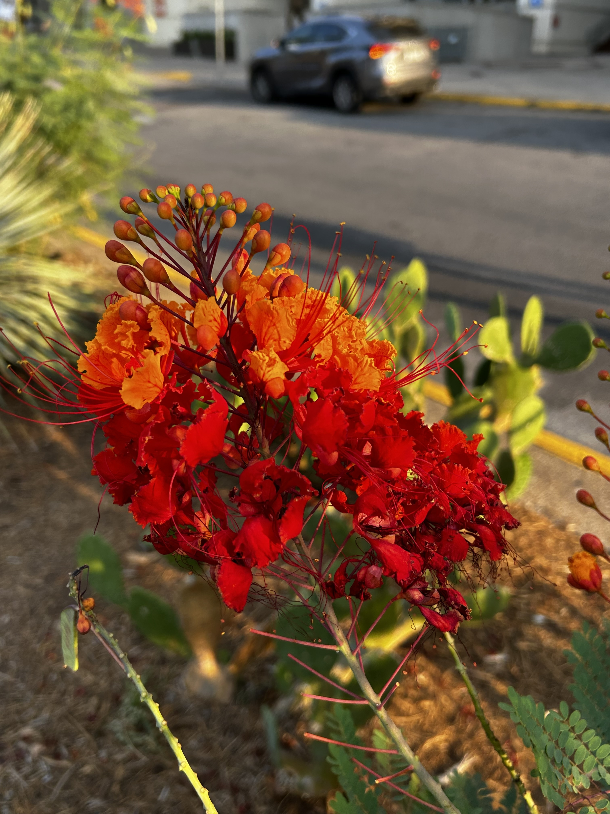

Quercus Fagaceae (Southern live oak)

SuperOak
Caesalpinia Pulcherrima (Pride-of-Barbados)

Flareheart
Opuntia Cacanapa (Texas Blue Pricklypear)

The Prickly Mirage
Tagetes Asteraceae (Marigold)

SolarGold
Taxodium Distichum (Baldcypress)

Swamp Sweeper
Salvia Greggii (Autumn Sage)
Shield Sage
Trifolium repens (Four-leaf clover)

Luckleaf
Dasylirion Wheeleri (Wheeler Sotol)

Blade Dancer
Lantana Verbenaceae (Wild verbena)
Swift Bloom
lantana Urticoides (Texas Lantana)

Sunfire
Hesperaloe Asparagaceae (Red-yucca)

Crimson Spire
Hamelia Patens (Firebush)

Blaze
üåø Great work on your plant walk journey! I hope you have come to love and appreciate plants much more. You may not think about it, but plants are truly superheros of our current world. They don‚Äôt just sit passively in the background of our lives. Plants actively regulate ecosystems, filter toxins, provide habitats for biodiversity, provide mental support, and so much more. Make sure to complete your mission once you have checked off all of the plants.